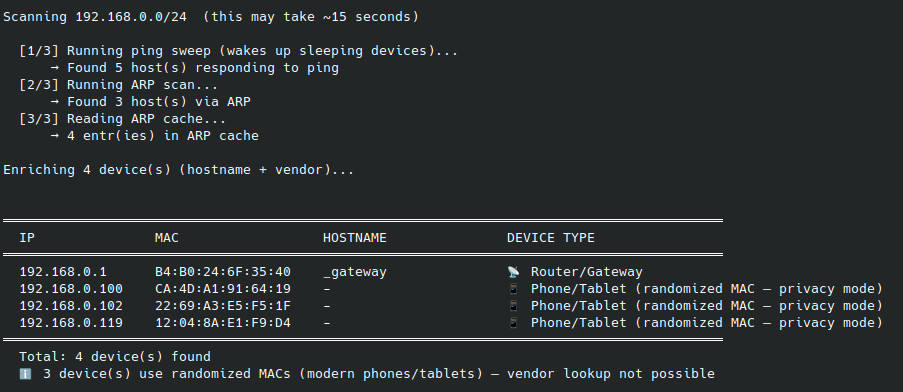
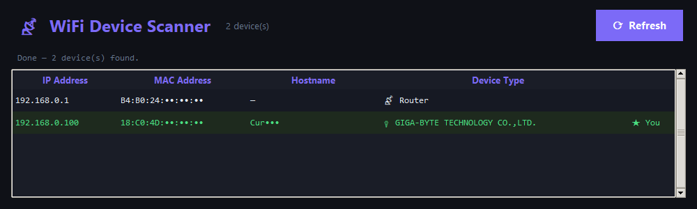

Ping sweep
All 254 addresses, 100 at a time. Wakes sleeping devices up.
Every device on your network: IP, MAC, hostname, maker, and a best guess at what it is. Even the phones that hide behind a random MAC.
GET IT ON GITHUB

All 254 addresses, 100 at a time. Wakes sleeping devices up.
Raw ARP requests with scapy: devices that ignore pings still answer.
ip neigh fills in anything the first two missed.
Hostname, maker from the MAC, and a type guess. Randomized MACs get flagged as phones.
pip install -r requirements.txt
sudo -E ./venv/bin/python scan_wifi.py # terminal
sudo -E ./venv/bin/python scan_wifi_tkinter.py # window
sudo -E ./venv/bin/python scan_wifi_pygame.py # animatedLinux, Python 3.9+, root for the ARP scan. Only scan networks you own or are allowed to scan.